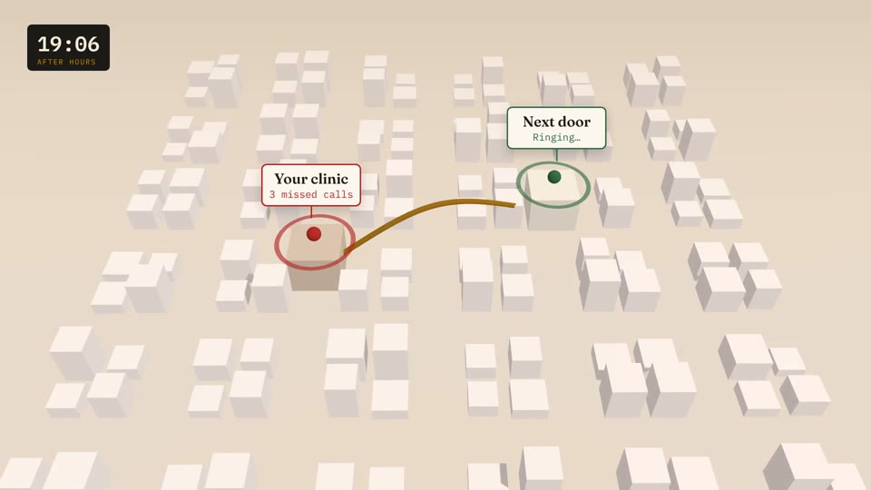
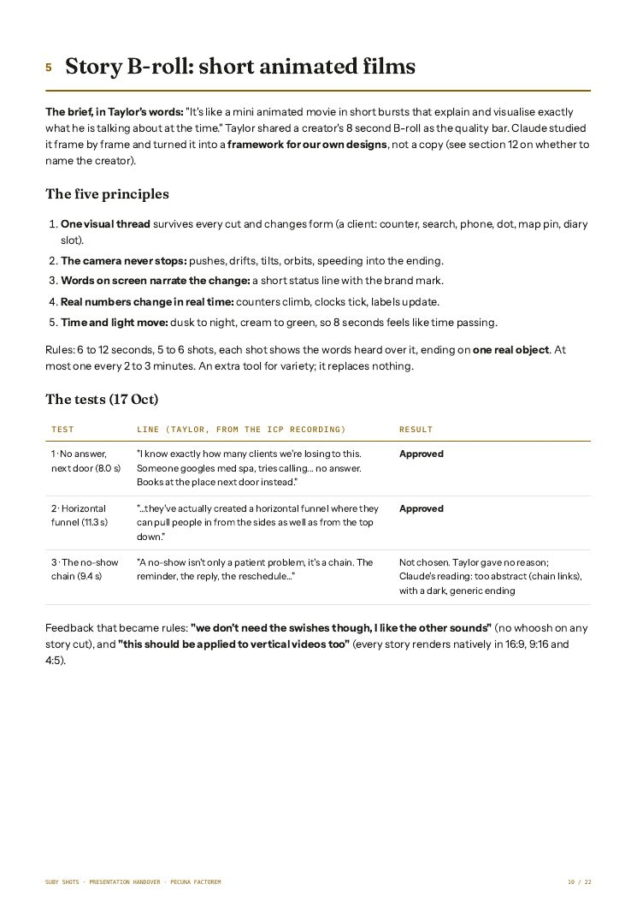

Real frames from the six outputs. Lengths: handover brief, section 3.
Real frames from the six outputs. Lengths from the QA reports in the handover brief, section 3.
Presenter notes
Hook, about 20 seconds. Click 1: the recording. SAY: “This is one 39-minute recording. Me, my face, my screen.” Click 2: the six outputs pop in. “Out of it came a YouTube video, a LinkedIn cut, an Instagram feed video and three Reels. Every one approved by me before the next was made.”
2 / 01 / Study the best
Pull up a Sabri Suby video
Sabri Suby · YouTubeplayed live from his channel
Open the video here, live
8 seconds of B-roll
“It's like a mini animated movie in short burst[s] that explain and visualise exactly what he is talking about at the time.” Taylor, 17 October 2026
Played live from Sabri Suby’s YouTube channel; none of his footage is copied into this deck. Quote: Taylor, build chat, 17 October 2026.
Presenter notes
Live moment. Click 1: the player. Switch to YouTube and play the Sabri Suby video, then the 8 seconds of B-roll. Click 2: the brief. SAY: “This is what I wanted. A mini animated movie in short bursts that shows exactly what he is talking about, at the moment he says it.” Never screen-record his footage into the edit.
3 / 01 / Study the best
Capture it with Lightshot, mark it in red
Lightshot · capture · mark · name the move

the thread changes form: a pin, then a path
✎╱➚▭T
Illustrative: our own Story B-roll frame stands in for the creator’s, whose footage is never copied.
Illustrative: our own Story B-roll frame stands in for the creator’s frame. Lightshot is a free screen capture tool.
Presenter notes
About 40 seconds. Show Lightshot live if you can. Click 1: drag a selection over a paused frame. Click 2: red box and arrow on the one element that matters. Click 3: name the move in red. SAY: “Pause, capture, mark it in red, write down what it is doing. Every frame becomes a note Claude can read.”
4 / 01 / Study the best
The five principles
01 / Study the best
Five things the 8 seconds do
1One visual thread changes form
2The camera never stops
3Words on screen narrate the change
4Real numbers change in real time
5Time and light move
Source: handover brief, section 5, the five principles. Rules: 6 to 12 seconds, 5 to 6 shots, ending on one real object.
Source: handover brief, section 5. Rules: 6 to 12 seconds, 5 to 6 shots, each showing the words heard over it, ending on one real object.
Presenter notes
About 45 seconds. Click 1: the strip slides in. Read the five. Click 2: frame 3 lights. SAY: “The one most people miss is three: the words on screen narrate the change. A short status line, every shot.”
5 / 01 / Study the best
29 graphic types, 94 graphics
01 / Study the best
Funnel
Pie
Quote
Hook
Clock
Karaoke
Target
Email
End card
Stamp
Roadmap
Steps
Ladder
Lanes
Compare
Counter
Flow
Cards
Pills
Rank
Prompt
Folders
Title
List
Questions
Ads panel
Chapter
Assets fan
Screen push
The YouTube master
29 graphic types 10 chapters 94 graphics
Every variation of motion content, counted. Source: handover brief, sections 3 and 4.
Source: handover brief, sections 3 and 4. Type names as the brief lists them.
Presenter notes
About 30 seconds. Click once and let the grid fill. SAY: “Then we broke down every kind of moving graphic we use. Twenty-nine types. In one 39-minute video, ninety-four of them, across ten chapters.”
6 / 02 / Reverse engineer it
From 8 seconds to a skill
02 / Reverse engineer it
From 8 seconds to a skill
8 s of B-roll
Step 1Watch the creator’s 8 seconds, frame by frameStep 2Capture and mark each move in Lightshot

Step 3Write the moves down as five principlesStep 4Make three test films from my own lines
Suby Shots 3.0.0-beta.2
Step 5Build it into the skill: 43 tests
17 October 2026. Our own designs from a framework, not a copy of theirs. Handover brief, sections 2 and 5.
All on 17 October 2026. A framework for our own designs, not a copy. Handover brief, sections 2 and 5.
Presenter notes
About 40 seconds. Click once; the playhead walks the five steps. SAY: “Watch it frame by frame. Capture every move and mark it in red. Write the moves down as rules. Make test films from my own lines. Then build it into the skill, with tests, so it does it the same way every time.”
7 / 02 / Reverse engineer it
Two skills, one pack
02 / Reverse engineer it
Two skills, one pack
Suby ShotsStory B-roll framework 29 graphic types
Vision Boardwith motion storyboards you approve
Variety Pack
The pack shows every option moving, on the real content, before the edit starts.
Suby Shots and the Vision Board with motion skill, combined into the Variety Pack step.
Presenter notes
About 30 seconds. Click 1: the two skills slide together. Click 2: the overlap. SAY: “We already had a Vision Board skill that shows a plan as moving storyboards. Put that together with everything Suby Shots knows about motion, and you get the Variety Pack.”
8 / 03 / The Variety Pack
This deck went through one
Shown in this deck’s pack
39
live designs across 10 families, half favourites and half new
Approved by Taylor
22
and nothing else is in this presentation
This deck’s own Variety Pack, round 1, decided on 30 October 2026.
This deck’s own Variety Pack: 39 designs shown, 22 approved by Taylor on 30 October 2026.
Presenter notes
About 20 seconds. Click once; the board splits. SAY: “This presentation went through one. Thirty-nine designs. I approved twenty-two, with Approve or Change on each card. Nothing I didn’t approve is in here.”
9 / 04 / Approve, then edit
Each stage waits for a yes
04 / Approve, then edit
Each stage waits for a yes
YouTube master39:19 · pilot approved firstApproved
LinkedIn cut10:19 · 13 momentsApproved
Instagram4:5 feed + 3 ReelsApproved
Source: handover brief, sections 2 and 4. Brand comes first; clip and stitch is planned, not built.
Source: handover brief, sections 2 and 4. Each platform is its own run; clip and stitch is planned, not built yet.
Presenter notes
About 30 seconds. One stamp per click. SAY: “Brand first, always. Then the YouTube master, starting with an 88-second pilot. Then LinkedIn. Then Instagram. Each one only starts after I say yes to the one before.”
10 / 04 / Approve, then edit
Want to chat?
Want to chat? Give me a message on WhatsApp
pecunafactorem.com/contact
Pecuna Factorem’s approved call to action. Contact: pecunafactorem.com/contact
Presenter notes
Close, about 10 seconds. Click once. SAY: “Want this for your videos? Give me a message on WhatsApp. The link is below.”